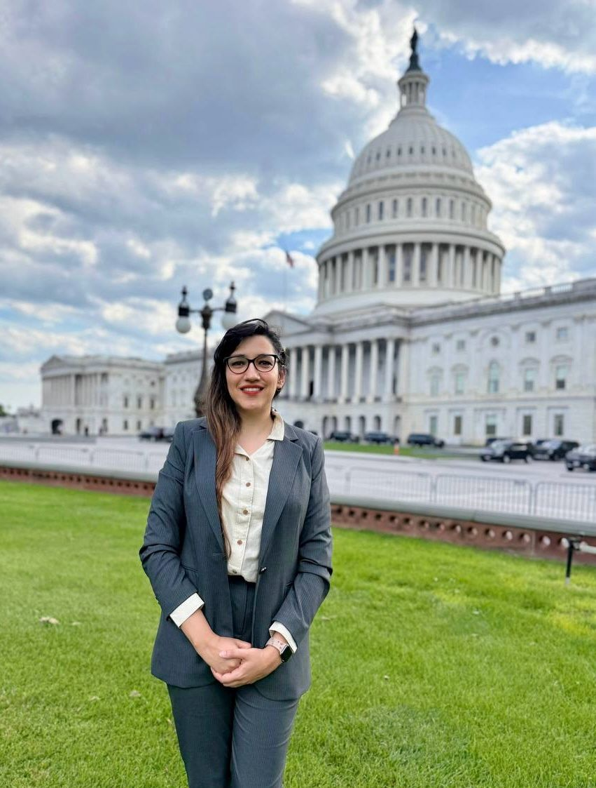

Featured
AMS and Virginia Sea Grant Launch New Policy Fellowship
Selected through a national competitive process as the inaugural VASG–AMS Fellow, bringing statistical modeling and data science expertise to the AMS Policy Program — where evidence on weather, water, climate, and coastal resilience informs national decision-making.
"My training has focused on turning complex data and information into something useful. I'm excited to learn how that process works at the policy level."